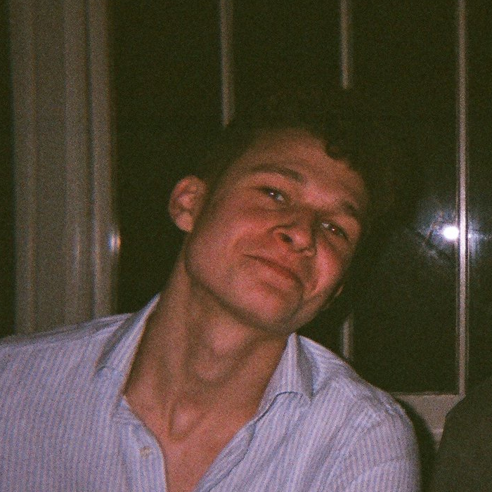

- Graduated from School in 2017 with A*s in Maths, Further Maths and Physics
- Starting an Engineering Science degree at Oxford University in October 2018
- Passionate about computing, business and mechanical engineering
- Work experience in a digital marketing agency
- Experience in Python, Ruby, HTML and CSS and I am developing my first app on iOS
- Fun Fact: I have a dog called Indy, named after the IndyCar Series
- I started the company Nebula Digital